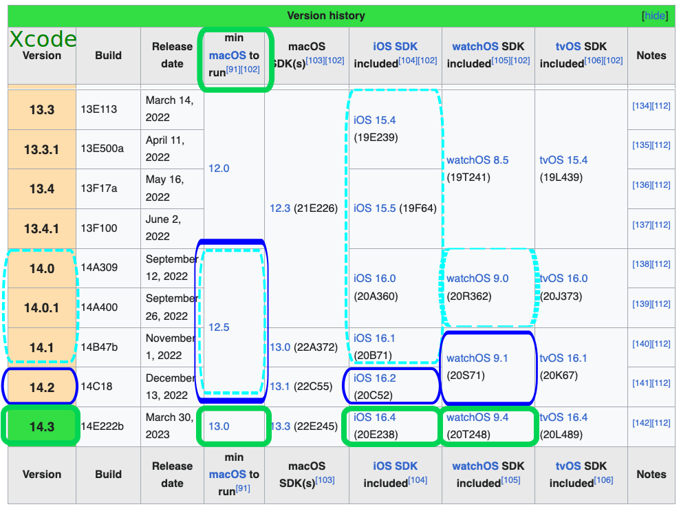

Xcode Version
Install Required Xcode Version¶
Time Estimate
- 45 minutes to 2 hours, depending on internet connection...but you don't need to babysit the download.
- 0 minutes if you decide to use the GitHub Browser Build method to build Loop
Summary
- Check iPhone iOS version
- The iOS version determines minimum Xcode version
- The minimum Xcode version determines minimum macOS version
- If necessary, update macOS first and then return to this step
- Download (or update) Xcode from your computer's App Store application
FAQs
- "Why isn't my Xcode installing?"
The two most common reasons are:- Lack of internet connection, or
- Not enough space on your hard drive
- Xcode is a large download, and needs at least 50GB of space to properly unpack and install itself
- If you do not have enough space on your hard drive, you will have installation failures
- Check the Space Available
- Although the download takes a long time, the good news is you can walk away once the download starts. If your laptop goes to sleep when you close the lid or when the screen saver starts, disable the screen saver and leave the laptop open.
- After Xcode has finished downloading (looks like the progress bar is almost completed), it takes a long time to unpack and install, be patient
- "Can I install Xcode on an external drive?" Unfortunately, no. Xcode needs to be on the Mac hard drive. But other things--like photos and documents--can be moved to an external drive to make room for macOS and Xcode updates.
What is Xcode?¶
Xcode is a free application for Apple computers. You will use Xcode to turn the "raw" Loop source code into an iOS application and install it onto your iPhone. Which version of Xcode you install on your computer depends on the iOS version you have on the iPhone you are going to be installing Loop on and the macOS version you have on your computer.
Because of the complexity of these dependencies, please read this entire page.
Or - look into building with GitHub Actions - no Mac computer required, no need to worry about versions for Mac OS or Xcode - all done for you on GitHub (some configuration required).
Which version of Xcode do I need?¶
First, choose a version of Xcode appropriate for your iOS device. Then, determine the minimum macOS version required for that Xcode version. Update to at least that minimum macOS version. Then follow the instructions to download and install Xcode (or update an existing installation):
- Open the App Store on your computer and search for "Xcode"
- If the version number you need is bigger than what is shown in the App Store, you need to first update your macOS
- Do not rely on the version number in this graphic

Version Relationship Overview¶
Have you turned off automatic updates on your iOS device?
Loop and iOS Updates
Please Read: Turn Off Automatic Updates
Before manually accepting an iOS update, be sure you have compatible versions of Xcode and MacOS.
Minimum Xcode Version
The minimum version of Xcode you need depends on the iOS version you have on your phone.
Please Read: Minimum Version List
Can't find the required Xcode version
- If your computer is not running the required minimum macOS, the App Store won't show the required minimum Xcode version
- You must use iOS to determine which Xcode, which determines which macOS
- Update your computer to at least that minimum macOS first
Don't be the person who posts for help saying, "I'm trying to update my Loop app but am getting errors." When asked what Xcode version they have and if they've updated, they respond, "I don't have any Xcode updates available in the App Store, so I must be running the most current version."
Actually, they forgot to check for macOS updates and therefore cannot see the needed Xcode update yet.
After Update - Reboot¶
After any update of macOS or Xcode, it is always a good idea to reboot your computer.
How do all the minimum versions relate to each other?¶
The list below contains the minimum versions of macOS and Xcode you'll need based on your iOS version. The highlighted sections, coordinated by color and linestyle in the graphic below, tie together the operating system nomenclature in the following bullets. The graphic is not updated as frequently as the words.
Newer versions of Xcode are always OK and should be used if your computer will accept the upgrade.
- Xcode 15.x (when released) and Ventura (macOS 13.0 or higher) is required for
- iOS 17 (when released))
- Xcode 14.3 or higher and Ventura (macOS 13.0 or higher) is required for
- iOS 16.4 and newer
- Xcode 14.2 or higher is required for
- iOS 16.2 through 16.3.x
- Xcode 14.1 or higher is required
- iOS 15.1 is minimum version for phone but 15.7.1 is better (for older phones)
- iOS 16.0 through 16.1.x is supported
When using a Mac-Xcode build and an iOS 16 or newer device, you must turn on developer mode for both the phone, and if paired, the watch.
Wikipedia Chart for Apple Versions¶
This graphic (copied from Wikipedia and last updated March 2023) is not updated with every iOS update - use it as a map to read the minimum requirements. Every attempt will be made to update the words in the Minimum Version List promptly - that's much easier than updating a graphic.
Follow this link to Wikipedia and scroll down to the the current version of this figure - the graphic shown below is a map of how to read the current version of this figure at Wikipedia.

What happens if you try using too old of Xcode?¶
It isn't some catastrophic failure if you try to build with an outdated Xcode without realizing it. If the build fails, nothing happens to your phone (or Loop on your phone if you are rebuilding). Nothing is copied from the computer to the phone until after you see the Build Succeeded message. You'll see a pretty obvious error message during your Loop build that says "Could not locate device support files." With newer versions of Xcode, the message will include words like "Could not prepare the device". That messages is telling you that your iOS on the phone requires you to get a newer version of Xcode to be able to build Loop onto that phone.

So, if you see that error message, realize you may have to update your macOS to be able to see the newest Xcode version that you will need. Make sure to check that chart to see what your minimum versions are for the iOS you are running on your iPhone.
With Loop 3, you may see another error when the Xcode version does not support the phone iOS. You may see Package.resolved file corrupted or malformed
Next Step: Xcode Settings¶
Now you are ready to set up Xcode Settings.